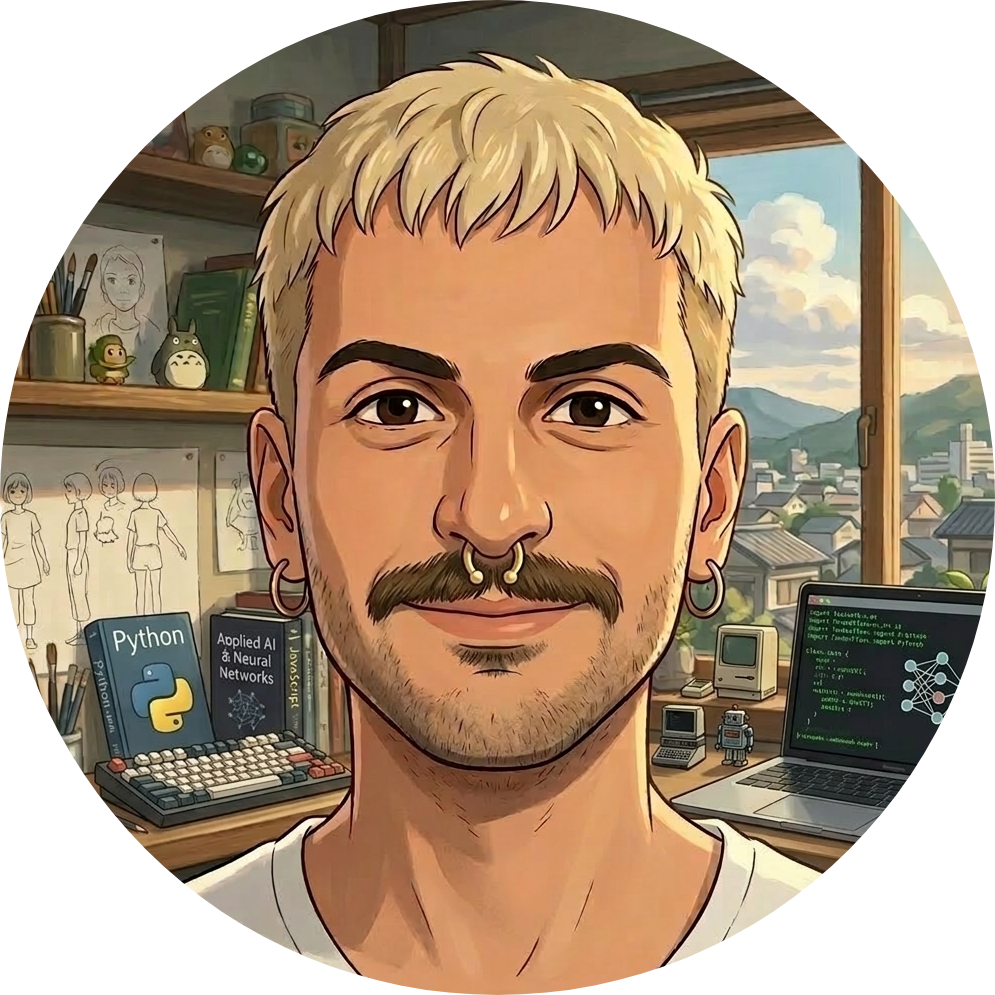
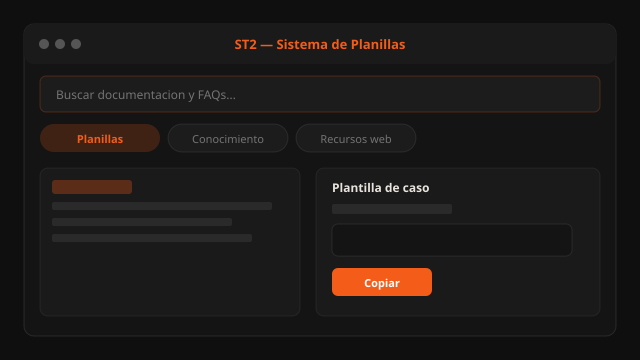
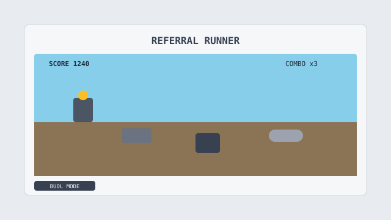

ST2 WEB
st2.tolei.dev ↗La suite en el navegador: misma lógica que el exe, API en servidor, frontend estático. Planillas y buscador sin instalar nada.
ASP.NET Core 9 · JavaScript · REST
Thomson Reuters · Bejerman · ST2
Soporte Bejerman en producción. Si un caso se repite más de dos veces en la mesa, probablemente ya tenga un script o una pantalla en ST2.
$ whoami
leonel.gallo · soporte técnico · buenos aires
$ stack --brief
sql-server · t-sql · csharp · dotnet · python · powershell
$ st2 status
4 módulos activos · exe + web + backup + consola
No empecé programando por hobby: empecé porque en soporte el mismo problema aparecía el lunes, el martes y el viernes.
Varios años en soporte e infraestructura. Me interesa que el sistema quede estable, que el caso cierre con contexto claro y que el próximo técnico no tenga que adivinar qué pasó.
En Thomson Reuters atiendo empresas y estudios contables con Bejerman: SQL Server, instalaciones, consultas y entornos donde un error a las 16:45 del mes contable no es opción.
La suite ST2 nació ahí — planillas de casos, backup de bases, consola de mantenimiento, versión web. Python al principio; hoy C# / .NET. Herramientas propias, no productos oficiales de TR.
Herramientas que uso o usé en soporte. La mayoría son ST2 — iniciativas personales de productividad.
Las herramientas ST2 no representan productos ni posiciones oficiales de Thomson Reuters.
La suite en el navegador: misma lógica que el exe, API en servidor, frontend estático. Planillas y buscador sin instalar nada.
ASP.NET Core 9 · JavaScript · REST

Exe principal del soporte: documentación de casos, conocimiento técnico y recursos web en un solo lugar.
C# · .NET 8 · WPF · WebView2 · SQLite

Backup y restore de bases Bejerman con detección de entorno y empaquetado listo para archivar o migrar.
C# · WinForms · T-SQL

Consola de campo: detecta instalación por registro y centraliza diagnósticos que antes eran 15 pasos manuales.
Batch · PowerShell · Registro Windows
Optimización de consultas y mantenimiento SQL Server en clientes enterprise.
SQL Server · T-SQL · SSMS
Servidores dedicados y monitoreo para gaming competitivo — de ahí vino el alias Tolei.
Windows Server · MySQL · Redes

Endless runner en Canvas con temática de mesa de ayuda — combos, power-ups y modo BUOL.
JavaScript · Canvas 2D
Consultas técnicas, colaboraciones en herramientas de soporte u oportunidades en IT.